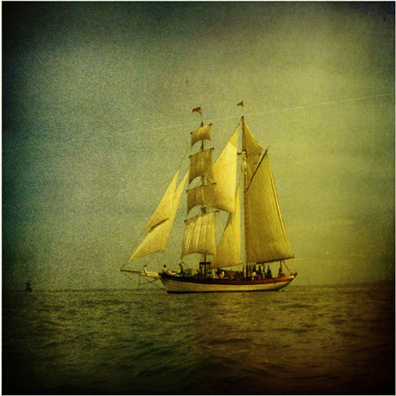

The sun was shining in Cat-a-tonia City when Captain Kitty turned to his second in command and said, "it's a good day to be soldier!"
What will happen next? Read the exciting First Grand Adventure: Or the Battle with the Fiendish Dogerton's
Sail Away to Excitement! With Captain Kitty Adventures!
GOOD NEWS! The Captain Kitty ship is ready to head out to the sea and onto high adventure! You too can join on this vessle as a member of the crew!
Like us and follow us right now!
Sailing Ship photo "The Good Life" by Patrick McConahay is licensed under CC BY 2.0